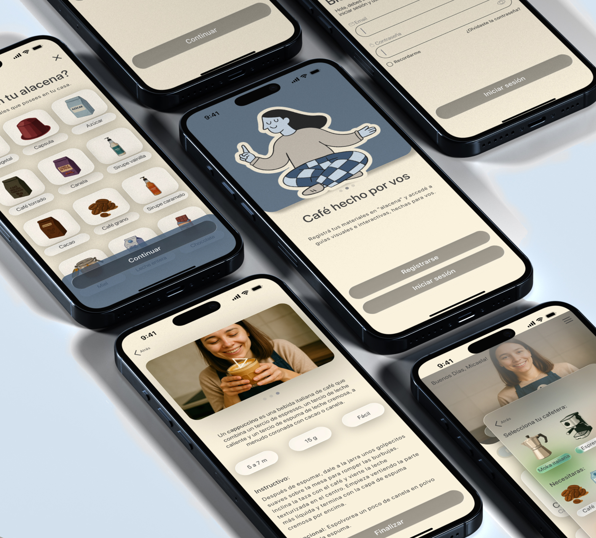
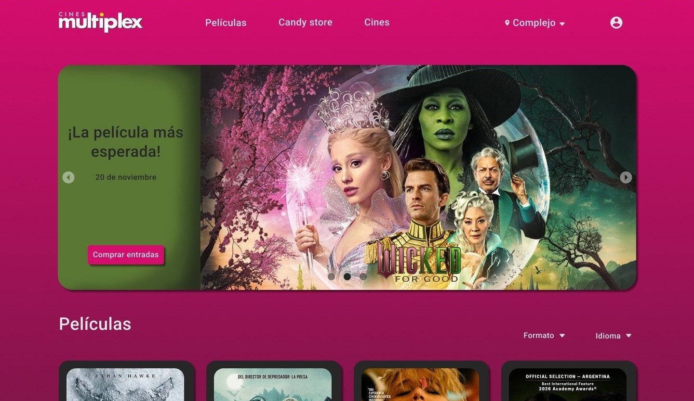
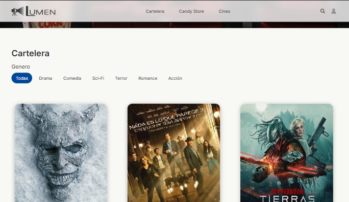

Proyectos

App Móvil
Preparar café de especialidad suele percibirse como un proceso costoso y técnico. Cafe Ideal nace para eliminar la fricción del usuario principiante, transformando la incertidumbre en una experiencia guiada e interactiva, sin necesidad de adquirir equipamiento profesional.
Ver proyecto
Rediseño Web
El rediseño de Multiplex Cines no fue una simple actualización visual; fue una reestructuración profunda de la experiencia de usuario. El objetivo principal fue transformar una plataforma anticuada en un ecosistema digital fluido, reduciendo la fricción en el proceso de compra de tickets y elevando el valor emocional de ir al cine.
Ver proyecto
Diseño Visual · Branding
Creación de identidad para un estudio de cerámica inspirado en la cultura andina. El objetivo fue transmitir calidez y luz mediante un sistema gráfico sólido. La metodología incluyó investigación conceptual y diseño de sistemas visuales.
Ver proyecto
Desarrollo Web
Inspirada por los hallazgos del UX Research de Multiplex Cines, desarrollé Lumen Cines: un proyecto pensado para los verdaderos amantes del cine (como yo), aunque igualmente amable con aquellos usuarios principiantes. Actualmente, se encuentra en fase de desarrollo y con el objetivo de reducir la carga cognitiva del usuario con una estética minimalista y moderna.
Ver proyectoSobre mí
Soy Micaela Delgado, una diseñadora apasionada por crear interfaces que no solo se vean bien, sino que se sientan bien. Mi motor es la curiosidad: como perfil Junior, cada proyecto es para mí una oportunidad de oro para volcar toda mi dedicación, pulir cada detalle y aprender algo nuevo.
Soy vegetariana, mamá de dos gatos y una eterna enamorada del cine, el buen café (¡y los mates!). Esa misma sensibilidad que tengo por lo que amo es la que aplico a mi trabajo: diseño con empatía y con el entusiasmo de quien sabe que los mejores resultados se logran trabajando en equipo.
Mi trayectoria previa en roles administrativos me ha dotado de habilidades críticas en comunicación y organización. Por este motivo, me entusiasma esta nueva etapa en mi vida como diseñadora, donde mis diseños tendrían un impacto real en las personas.
Proceso
Entrevistas de usuario, análisis competitivo y definición del problema. Entender antes de diseñar.
Crear Personas, User Flows y mapas de empatía para tener claridad sobre las necesidades reales.
Wireframes de baja fidelidad hasta prototipos navegables en Figma, iterando con feedback continuo.
Testing con usuarios reales, análisis de resultados y refinamiento hasta lograr la solución óptima.
¿Hablamos?
Estoy disponible para nuevas oportunidades full-time y proyectos freelance.
micaelaj99@gmail.com